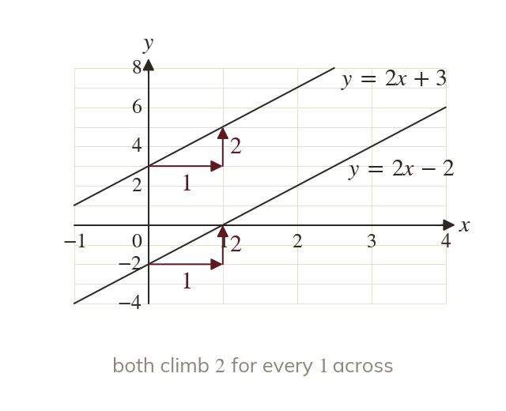

Same gradient, never meet
Parallel lines have the same gradient. With different y-intercepts, they never meet.
Parallel lines climb by the same amount for every step across, so they have the same gradient. With different y-intercepts they never meet.